Montamos una central telefónica completa con software libre: los teléfonos de una empresa se llaman entre sí usando la misma red que ya transporta sus datos.
Redes de Datos · Licenciatura en Sistemas de Información · Grupo 29
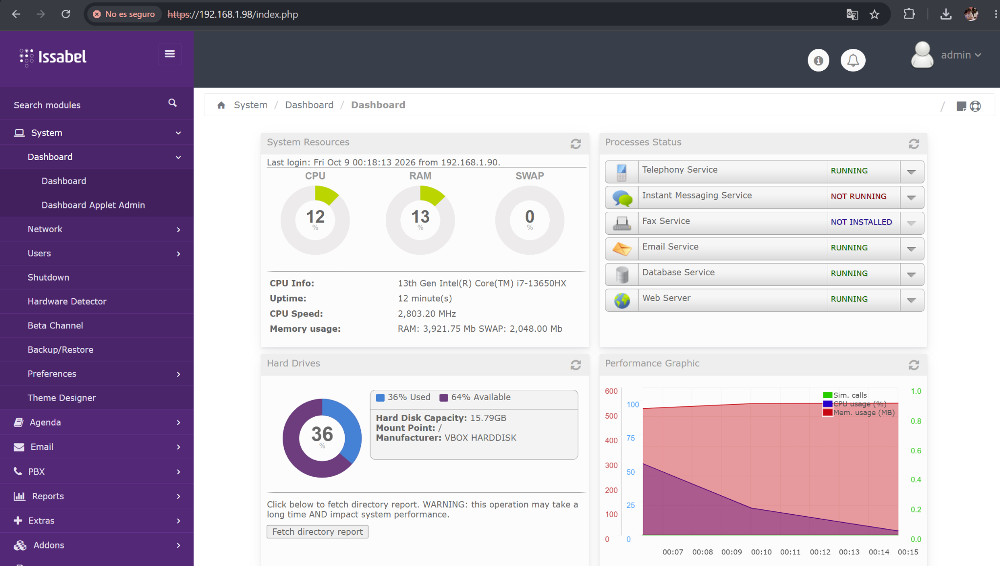
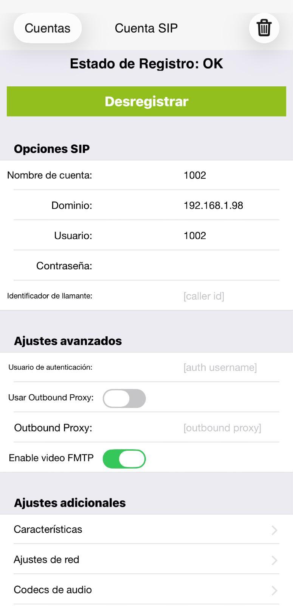
Desplegar Asterisk en una máquina virtual y verificar en la red cómo funcionan SIP y RTP.
La voz se convierte en paquetes IP y comparte la LAN con el resto del tráfico.
Dos tráficos en paralelo: SIP arma la llamada y RTP lleva la voz.
Señalización
UDP 5060Códecs y puertos
dentro de SIPLa voz, cada 20 ms
UDP 10000–20000Entre servidores Asterisk
UDP 4569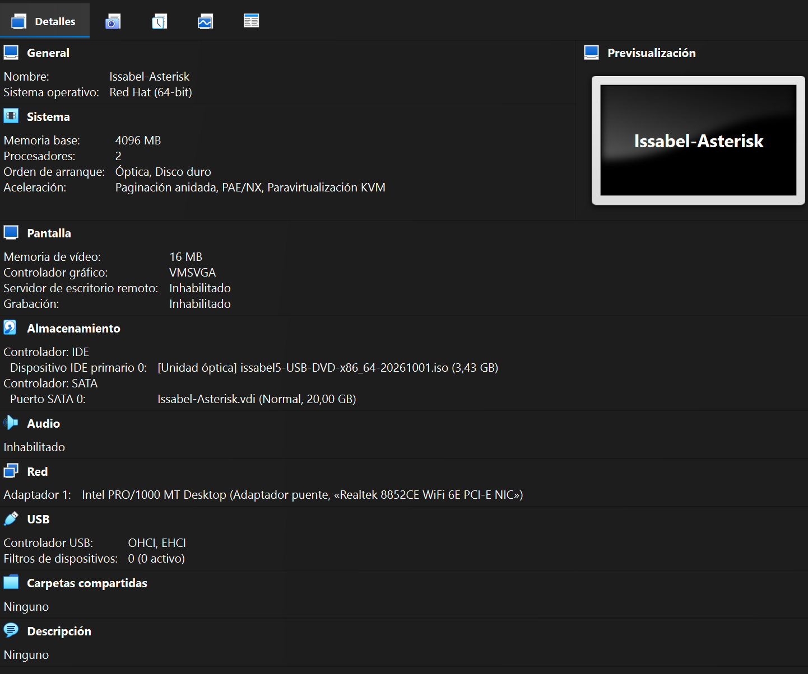
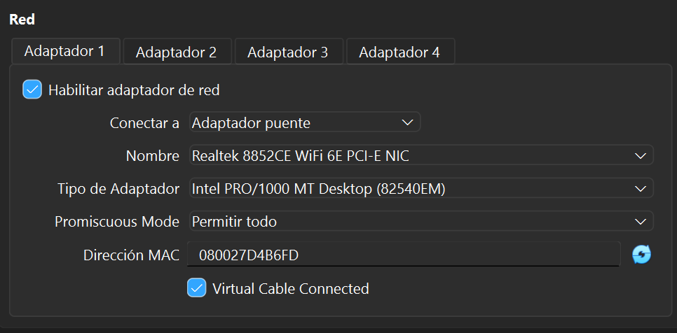
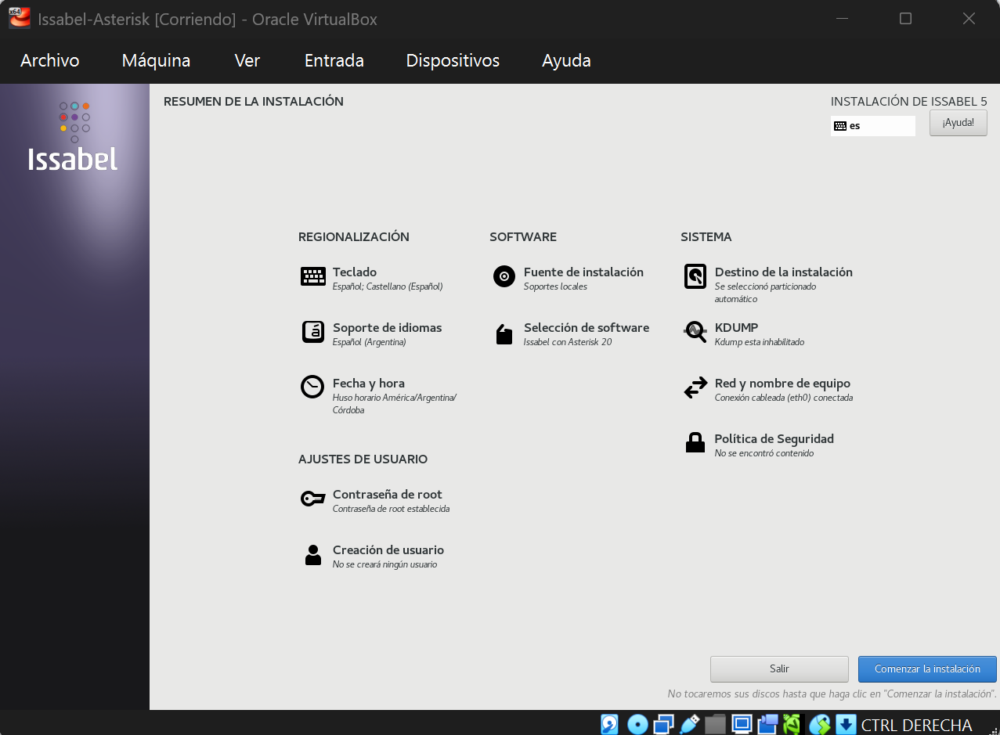
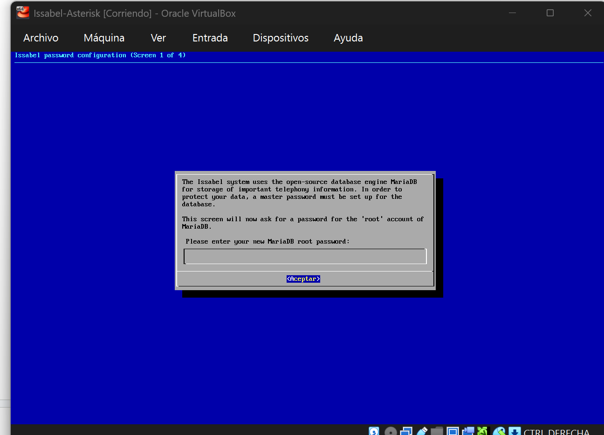
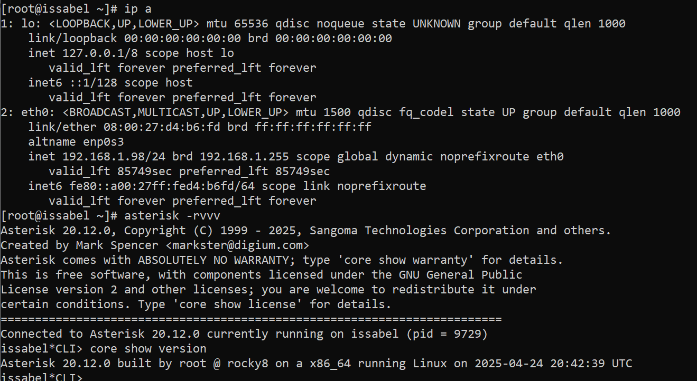
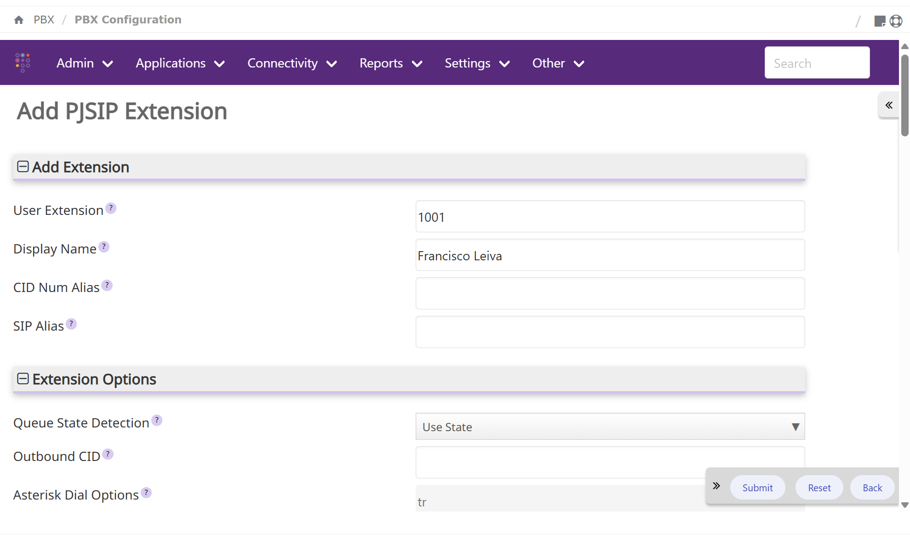
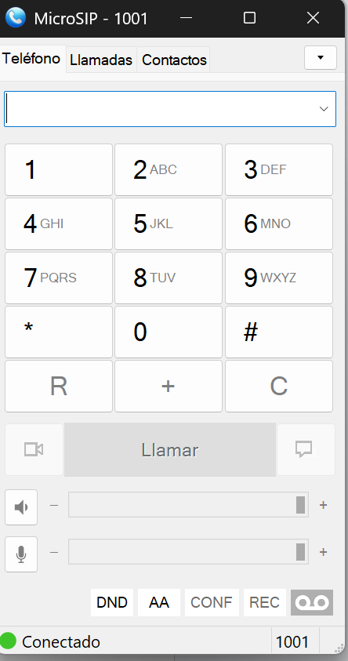
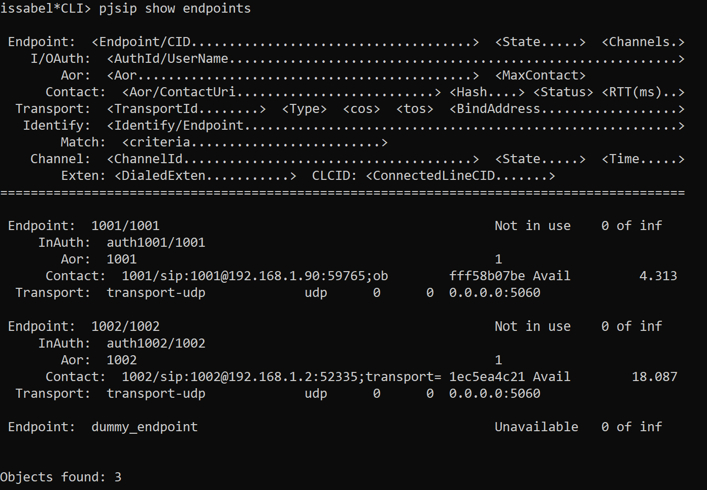
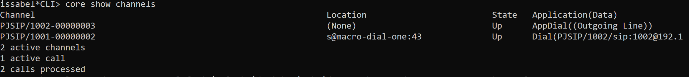
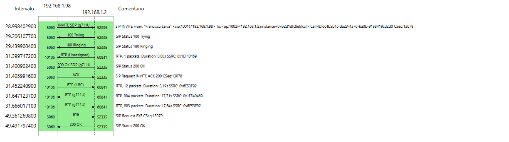
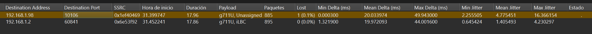
La secuencia coincide con el RFC 3261: pérdida < 1% y jitter bajo.
Fail2ban + claves largas
Firewall + VPN
Bloqueo en el dialplan
TLS + SRTP
IP pública declarada en PJSIP · sin SIP ALG
Retardo < 150 ms · VLAN de voz · DSCP EF
10 llamadas G.711 simultáneas
Demo en vivo: llamada de la extensión 1001 a la 1002.